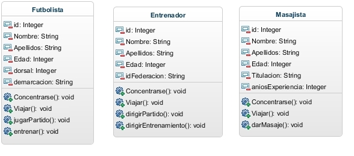
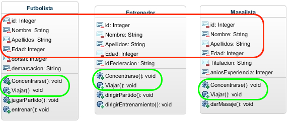

Temario:
- Interfaces
- Herencia
- Ejercicio
Universidad Centroamericana "José Simeón Cañas".
Programación orientada a objetos.
Ciclo 01/19.
Una interfaz es una especie de plantilla para la construcción de clases. Normalmente una interfaz se compone de un conjunto de declaraciones de cabeceras de métodos que especifican un protocolo de comportamiento para una o varias clases
Además, una interfaz puede emplearse también para declarar constantes que luego puedan ser utilizadas por otras clases.
Las interfaces cumplen con las siguientes propiedades:
public interface IndentificadorInterfaz{
//Lista de constantes y métodos.
}
public class IdentificadorClase implements IndentificadorInterfaz{
//Resto de clase
}
ShapesCalc.java
public interface ShapesCalc{
float calcArea();
float calcVolume();
}
sphere.java
public class Shepere implements ShapesCalc{
public float calcArea(){
//proceso con formula
}
public float calcVolume(){
//proceso con formula
}
}
La Herencia es uno de los 4 pilares de la programación orientada a objetos (POO) junto con la Abstracción, Encapsulación y Polimorfismo.
Respecto a la herencia se han dado muchas definiciones como por ejemplo la siguiente: "La herencia es un mecanismo que permite la definición de una clase a partir de la definición de otra ya existente. La herencia permite compartir automáticamente métodos y datos entre clases, subclases y objetos.".
Vamos a simular el comportamiento que tendrían los diferentes integrantes de la selección española de futbol; tanto los Futbolistas como el cuerpo técnico (Entrenadores, Masajistas, etc…). Para simular este comportamiento vamos a definir tres clases que van a representaran a objetos Futbolista, Entrenador y Masajista. De cada unos de ellos vamos a necesitar algunos datos que reflejaremos en los atributos y una serie de acciones que reflejaremos en sus métodos. Estos atributos y métodos los mostramos en el siguiente diagrama de clases:
Como se puede observar, vemos que en las tres clases tenemos atributos y métodos que son iguales ya que los tres tienen los atributos id, Nombre, Apellidos y Edad; y los tres tienen los métodos de Viajar y Concentrarse:
Con lo cual aquí se puede extraer un "factor común" de las clases y crear una clase padre que se identifique como IntegranteSeleccion en cual contenga los atributos y métodos que se tienen en común
plublic class IdentificadorClase extends IdetificadorClasePadre{
//Contenido clase
}
NOTAL: La clase hija que hereda una clase padre, contiene todos los atributos y métodos que su clase padre, y la clase hija puede tener sus propios métodos
Simular un zoológico en el cual se pueda realizar un ingreso y visualización de animales ,el programa debe contener lo siguiente: